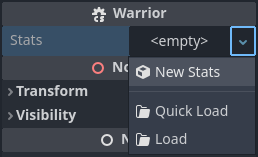

C# global classes
Global classes (also known as named scripts) are types registered in Godot's
editor so they can be used more conveniently.
In GDScript, this is achieved
using the class_name keyword at the top of a script. This page describes how
to achieve the same effect in C#.
Global classes show up in the Add Node and Create Resource dialogs.
If an exported property is a global class, the inspector restricts assignment, allowing only instances of that global class or any derived classes.
Global classes are registered with the [GlobalClass] attribute.
using Godot;
[GlobalClass]
public partial class MyNode : Node
{
}
Warning
The file name must match the class name in case-sensitive fashion.
For example, a global class named "MyNode" must have a file name of
MyNode.cs, not myNode.cs.
The MyNode type will be registered as a global class with the same name as the type's name.

The Select a Node window for the MyNode exported property filters the list
of nodes in the scene to match the assignment restriction.
public partial class Main : Node
{
[Export]
public MyNode MyNode { get; set; }
}

If a custom type isn't registered as a global class, the assignment is
restricted to the Godot type the custom type is based on. For example, inspector
assignments to an export of the type MySimpleSprite2D are restricted to
Sprite2D and derived types.
public partial class MySimpleSprite2D : Sprite2D
{
}
When combined with the [GlobalClass] attribute, the [Icon] attribute
allows providing a path to an icon to show when the class is displayed in the
editor.
using Godot;
[GlobalClass, Icon("res://Stats/StatsIcon.svg")]
public partial class Stats : Resource
{
[Export]
public int Strength { get; set; }
[Export]
public int Defense { get; set; }
[Export]
public int Speed { get; set; }
}

The Stats class is a custom resource registered as a global class. Exporting properties of the
type Stats will only allow instances of this resource type to be assigned, and the inspector
will let you create and load instances of this type easily.


Warning
The Godot editor will hide these custom classes with names that begin with the prefix "Editor" in the "Create New Node" or "Create New Scene" dialog windows. The classes are available for instantiation at runtime via their class names, but are automatically hidden by the editor windows along with the built-in editor nodes used by the Godot editor.